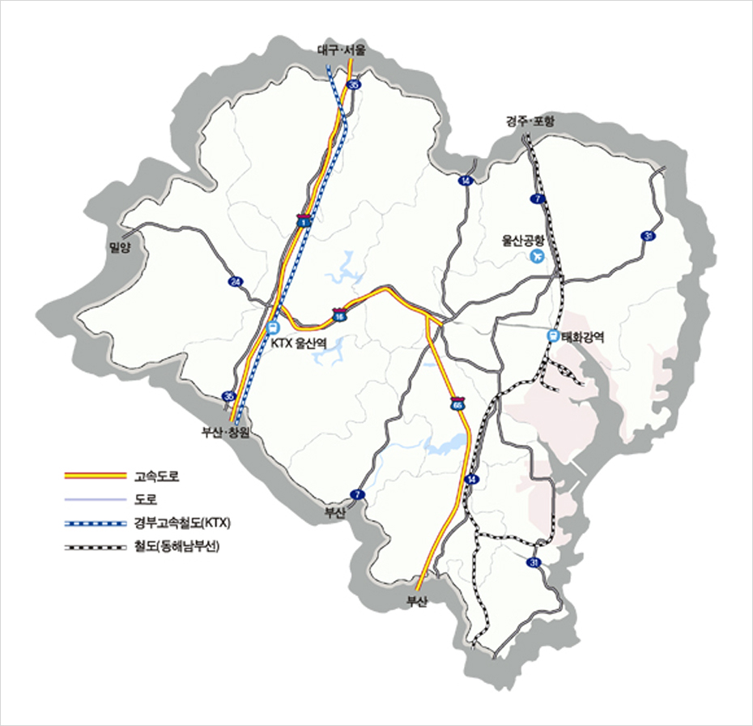

최적의 물류인프라
- Home
- 투자 강점
- 투자환경
- 최적의 물류인프라
최적의 물류인프라
초고속철도 KTX, 도로, 항공 등 교통물류 시스템을 완비하고 있으며, 공단내까지 산업철도가 부설되어 있어 최적의 접근성을 제공합니다.
철도교통
초고속철도인 KTX로 서울 및 전국주요도시와 2시간 대로 가까워 졌으며, 또한 산업단지 안까지 철도가 부설 되어 있어 원료 또는 제품의 대량 수송에 용이합니다.
항공교통
울산공항이 도심 가까이 위치하여 서울로 가는 정기 항공편이 매일 운항되고 있으며, 자동차로 1시간 거리인 김해국제공항에서 국제선을 편리하게 이용할 수 있습니다.
도로교통
4개의 고속도로와 5개의 국도가 울산을 관통하고 있어, 서울, 부산 등 전국 주요도시와 도심 및 산업단지를 유기적으로 연결하고 있습니다.
